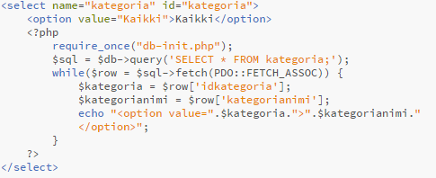
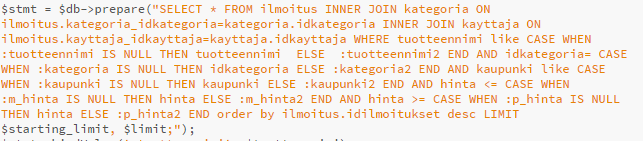
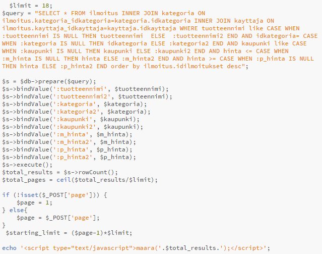
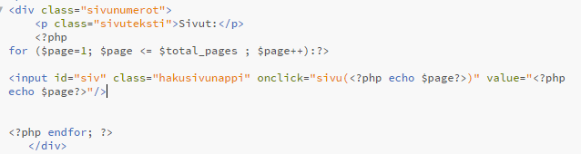

Eletorix - kaiken elektroniikan kauppapaikka
Jesse Huttunen L5321
Aatu Anttila L5275
Tuomas Marttila K8430
TTMS0700 Web-projekti 2
16.4.2019
1. Työn kuvaus
Opintojaksossa on tarkoitus on toteuttaa laaja web-sovellus, jossa käytetään asiakas- ja palvelinpuolen tekniikoita.Eletorix on käytetyn elektroniikan kauppapaikka, Tori.fi:n tapaan. Rekisteröityneet käyttäjät voivat lisätä uusia ilmoituksia, ja kuka tahansa voi katsella näitä ilmoituksia ja jättää kysymyksiä niistä. Eletorix:in käyttämiä tekniikoita on php, AJAX, JavaScript, jQuery, html ja css. Sovellus ja tietokanta pyörii JAMK:in labranet-palvelimella.
Linkki Eletorix
Käyttäjätunnkuset adminin testaamiseen: admin, salasana
Lähdekoodi Lähdekoodi Lähdekoodi
Linkki zip-pakettiin
2. Vaatimusmäärittely
Toiminnot: Käyttäjä Rekisteröityminen Käyttäjän pitää pystyä rekisteröitymään sivustolle, jotta hän voi lisätä omia myynti-ilmoituksia. Rekisteröityessä vaaditaan käyttäjän koko nimi, osoite, sähköposti ja puhelinnumero. Sisäänkirjautuminen Käyttäjä kirjautuu sivustolle kirjoittamalla tunnuksensa ja salasanansa niille osoitettuihin kenttiin etusivulla. Salasanan vaihto Käyttäjä voi vaihtaa salasanaansa omissa asetuksissaan. Myynti-ilmoituksen lisäys Käyttäjä voi lisätä sivustolle uusia myynti-ilmoituksia, kun on ensin kirjautunut sivustolle sisään. Myynti-ilmoituksen poisto Käyttäjän on mahdollista poistaa omia myynti-ilmoituksia omien myynti-ilmoitusten listauksessa. Myynti-ilmoituksen muokkaus Käyttäjä pystyy muokkaamaan oman myynti-ilmoituksen tietoja. Myynti-ilmoituksen haku Käyttäjä voi etsiä myynti-ilmoituksia hakusanalla tai hakuvalikoista valitsemillaan vaihtoehdoilla. Viestintä Käyttäjän on mahdollista viestiä muiden myynti-ilmoitusten tekijöiden kanssa tuotteisiin liittyen, sekä viestiä omien myynti-ilmoituksiin tulleiden viestien lähettäjien kanssa. Omien myynti-ilmoitusten listaus Käyttäjä pääsee selaamaan omia myynti-ilmoituksiaan myynti-ilmoitusten listauksesta, ja samalla muokkaamaan ja poistamaan niitä. Toiminnot: Admin Käyttäjien oikeudet Adminilla on kaikki käyttäjän toiminnot sekä, oikeudet poistaa toisia käyttäjiä. Adminilla on myös oikeudet lisätä ja poistaa kategorioita. Kaikkien myynti-ilmoitusten poisto Adminilla on oikeus poistaa mikä tahansa myynti-ilmoitus. Käyttäjätasot Admin Adminilla on oikeudet peruskäyttäjien tietojen muokkaamiseen ja tunnusten poistoon, sekä uuden salasanan lähettämiseen. Admin pystyy poistamaan sivulta minkä tahansa myynti-ilmoituksen. Admin voi lisätä ja poistaa kategorioita . Peruskäyttäjä Peruskäyttäjä voi lisätä sivulle omia myynti-ilmoituksiaan, sekä muokata ja poistaa niitä. Käyttäjä voi viestittää muiden myynti-ilmoitusten luojien kanssa, sekä omiin myynti-ilmoituksiin tulleiden viestien lähettäjille.
3. Toteutus
Vastuualueet - Aatu
Päävastuualueet:
Osittain:
Ilmoitus
- ilmoitus.php
Muuttujat
$id = $row['idilmoitukset'];
$tuotteennimi = $row['tuotteennimi'];
$paivays_koko = $row['paivays'];
$paivays = "";
$paivays .= substr($paivays_koko,8,2)."."; //päivä
$paivays .= substr($paivays_koko,5,2)."."; //kk
$paivays .= substr($paivays_koko,0,4); //vuosi
$paivaysklo = "";
$paivaysklo .= substr($paivays_koko,10,6);
$kategoria = $row['idkategoria'];
$hinta = $row['hinta'];
$tuotekuvaus = $row['tuotekuvaus'];
$kuva = $row['kuva'];
$kateg = $row['idkategoria'];
$kategorianimi = $row['kategorianimi'];
$nimi = $row['nimi'];
$email = $row['email'];
$puhnum = $row['puhnum'];
$osoite = $row['osoite'];
$kaupunki = $row['kaupunki'];
$kayttajaid = $row['kayttaja_idkayttaja'];
$ref = $_SERVER['PHP_SELF'] . "?id=$id"; // Ilmoituksen URL
// Istuntomuuttujat:
$userid = $_SESSION['Id']; // Käyttäjänimi
$kayttajatyyppi = $_SESSION['tyyppi']; // Käyttäjätyyppi
$_SESSION['suosikit']; // Suosikit-lista
Haetaan ilmoitus id:n perusteella
SELECT * FROM ilmoitus INNER JOIN kategoria ON ilmoitus.kategoria_idkategoria=kategoria.idkategoria INNER JOIN kayttaja ON ilmoitus.kayttaja_idkayttaja=kayttaja.idkayttaja WHERE idilmoitukset=:id;
Kommentit
- ilmoitus.php
Kommentit lähetetään ja ladataan ilmoitus.php tiedostossa. Kommentit lähetetään anonyymeinä nimimerkillä.
Muuttujat
$kommenttiteksti = $_POST['kommenttiteksti']; // Kommentin teksti
$nickname = $_POST['nickname']; // Kommentoijan nimimerkki
Kommentin lisäys
INSERT into kommentti (kommenttiteksti, nickname, kommenttipaivays, ilmoitus_idilmoitukset) values ('$kommenttiteksti', '$nickname', NOW(), '$idilmoitus';
Ilmoituskohtaisten kommenttien haku
SELECT * from kommentti WHERE ilmoitus_idilmoitukset = $id ORDER BY idkommentti ASC;
Haetaan kommentin tykkäysten määrä
SELECT COUNT(*) FROM kommentti_peukut WHERE kommentti_idkommentti = '$idkommentti';
Kommenttien tykkäys
- ilmoitus.php
- thumbsup.php
Kommentteja voi tykätä painamalla peukkua kommentissa. Kommentteja tykätessä pitää olla kirjautunut sisälle, tai muuten sivu ohjaa kirjautumissivulle.
Kommentin tykkäyksen lisääminen
INSERT INTO kommentti_peukut (kayttaja_idkayttaja, kommentti_idkommentti); VALUES ('$idkayttaja', $idkommentti)
Kommentin tykkäyksen poisto
DELETE FROM kommentti_peukut WHERE kayttaja_idkayttaja = '$idkayttaja' AND kommentti_idkommentti = '$idkommentti';
Käyttäjän tili
- account.php
"Eletorix-tili" bannerissä. Käyttäjä voi selata omia ilmoituksiaan, muuttaa omia asetuksiaan, sekä muuttaa salasanaansa.
Muuttujat
// Istuntomuuttujat:
$userid = $_SESSION['Id']; // Käyttäjänimi
// Käyttäjän tiedot
$nimi = $row['nimi'];
$email = $row['email'];
$puhnum = $row['puhnum'];
$osoite = $row['osoite'];
$kaupunki = $row['kaupunki'];
$salasana = $row['salasana'];
// Käyttäjän ilmoitukset
$id = $row['idilmoitukset'];
$tuotteennimi = $row['tuotteennimi'];
$paivays = $row['paivays'];
$hinta = $row['hinta'];
$tuotekuvaus = $row['tuotekuvaus'];
$kuva = $row['kuva'];
$kategoria = $row['kategoria_idkategoria'];
$nimi = $row['nimi'];
$email = $row['email'];
$puhnum = $row['puhnum'];
$osoite = $row['osoite'];
$kaupunki = $row['kaupunki'];
$ref = $_SERVER['PHP_SELF'];
// Salasanan vaihto
$uusi_sn = $_POST['uusi_sn'];
$uusi_sn_uudelleen = $_POST['uusi_sn_uudelleen'];
$nykyinen_sn = $_POST['nykyinen_sn'];
$nykyinen_sn_db = $row['salasana']; // Nyk. salasana tietokannassa
Käyttäjän tietojen haku
SELECT * FROM kayttaja WHERE nimi = :username;
Omat ilmoitukset
Omien ilmoitusten haku
SELECT * FROM ilmoitus INNER JOIN kayttaja ON ilmoitus.kayttaja_idkayttaja = kayttaja.idkayttaja WHERE kayttaja.nimi =:username;
Tietojen muokkaus
- updateacc.php
UPDATE kayttaja SET email='$email', puhnum='$puhnum', osoite='$osoite', kaupunki='$kaupunki' WHERE nimi ='$username';
Salasanan vaihto
- changepwd.php
Haetaan nykyinen salasana
SELECT salasana FROM kayttaja WHERE nimi = :username;
Haetaan käyttäjän id nimen perusteella
SELECT idkayttaja FROM kayttaja WHERE nimi = :username;
Asetetaan uusi salasana
UPDATE kayttaja SET salasana=md5('$uusi_sn') WHERE idkayttaja = '$idkayttaja';
Ylläpito
- adminpage.php
- addkategoria.php
- delkategoria.php
- delkayttaja.php
Admin-tason käyttäjä voi lisätä ja poistaa kategorioita ja käyttäjiä ylläpidon sivulla.
Muuttujat
// Istuntomuuttujat
$username = $_SESSION['userId']; // Käyttäjänimi
$tyyppi = $row['tyyppi']; // Käyttäjätyyppi (onko admin)
// Käyttäjien haku valikkoon
$nimi = $row['nimi'];
$idkayttaja = $row['idkayttaja'];
// Kategorioiden haku valikkoon
$kategorianimi = $row['kategorianimi']; // Kategorianimi
$idkategoria = $row['idkategoria']; // Kategoria ID
// Valinnan valinta valikosta
$valinta = $_POST['valikko'];
Haetaan käyttäjän tyyppi (tarkistetaan onko admin)
SELECT tyyppi FROM kayttaja WHERE nimi = :username;
Kategorian lisääminen
INSERT INTO kategoria (kategorianimi, kategoriakuvaus) VALUES('$nimi', '$kuvaus');
Kategorian poisto
DELETE FROM kategoria where idkategoria = $valinta;
Käyttäjän poisto
DELETE FROM kayttaja where idkayttaja = $valinta;
Suosikit
- suosikit.php
- addsuosikki.php
- delsuosikki.php / delsuosikki2.php
Ilmoituksia voi lisätä suosikeiksi istuntomuuttujaan. Samalla tulee oikeaan yläkulmaan popup, jossa kerrotaan, että ilmoitus on lisätty suosikkeihin (JS). Myös suosikkien määrä näkyy ylhäällä navigaatio-napeissa.
Muuttujat
// Istuntomuuttujat
$_SESSION['userId'] // Käyttäjänimi
$_SESSION['suosikit'] // Suosikkilista, sisältää suosikki-ilmoitusten ID:t
$idilmoitus = $_SESSION['suosikit'][$i] // Ilmoituksen ID suosikkilistan indeksissä $i
// Ilmoituksen muuttujat
$id = $row['idilmoitukset'];
$tuotteennimi = $row['tuotteennimi'];
$paivays = $row['paivays'];
$hinta = $row['hinta'];
$tuotekuvaus = $row['tuotekuvaus'];
$kuva = $row['kuva'];
$kategoria = $row['idkategoria'];
$kategorianimi = $row['kategorianimi'];
$nimi = $row['nimi'];
$email = $row['email'];
$puhnum = $row['puhnum'];
$osoite = $row['osoite'];
$kaupunki = $row['kaupunki'];
$ref = $_SERVER['PHP_SELF'];
Suosikkien hakeminen
SELECT * FROM ilmoitus INNER JOIN kategoria ON ilmoitus.kategoria_idkategoria=kategoria.idkategoria INNER JOIN kayttaja ON ilmoitus.kayttaja_idkayttaja=kayttaja.idkayttaja WHERE idilmoitukset=:id;
Suosikin lisääminen listaan
if (isset($_SESSION['suosikit'])) {
if (!in_array($idsuosikki, $_SESSION['suosikit']))
array_push($_SESSION['suosikit'], $idsuosikki);
} else {
$_SESSION['suosikit'] = array();
array_push($_SESSION['suosikit'], $idsuosikki);
}
Suosikin poisto listasta ja listan järjestäminen uudelleen
$i = array_search($idsuosikki, $_SESSION['suosikit']); unset($_SESSION['suosikit'][$i]); $_SESSION['suosikit'] = array_values($_SESSION['suosikit']);
Viestit
- viestikeskus.php
- uusiviesti.php
- sendmsg.php
Viestejä voi lähettää ilmoituksessa painamalla "Ota yhteyttä myyjään"-nappia. Jos ei ole kirjautunut sisään, ohjataan kirjautumiseen. Viestit-osio on hieman keskeneräinen, koska sen lisääminen tapahtui projektin viimeisellä viikolla.
Muuttujat
$id = $row['idviesti']; // Viestin ID
$lahID = $row['idlahettaja']; // Viestin lähettäjän ID
$stmt2 = $db->prepare("SELECT nimi FROM kayttaja WHERE idkayttaja = '$lahID';");
$stmt2->execute();
$row2 = $stmt2->fetch(PDO::FETCH_ASSOC);
$lah = $row2['nimi']; // Viestin lähettäjän käyttäjänimi
$tuoID = $row['idtuote']; // Viestiä koskevan tuotteen ID
$stmt2 = $db->prepare("SELECT tuotteennimi FROM ilmoitus WHERE idilmoitukset = '$tuoID';");
$stmt2->execute();
$row2 = $stmt2->fetch(PDO::FETCH_ASSOC);
$tuo = $row2['tuotteennimi']; // Viestiä koskevan tuotteen nimi
$sis = $row['sisalto']; // Viestin sisältö
$pvm = $row['pvm']; // Viestin PVM
$lue = $row['luettu']; // Onko viesti luettu (true/false)
$pvm_koko = $row['pvm'];
$pvm = "";
$pvm .= substr($pvm_koko,8,2)."."; // päivä
$pvm .= substr($pvm_koko,5,2)."."; // kk
$pvm .= substr($pvm_koko,0,4); // vuosi
$pvmklo = "";
$pvmklo .= substr($pvm_koko,10,6);
$vasID = $row['idvastaanottaja']; // Viestin vastaanottajan ID
$vas = $row2['nimi']; // Viestin vastaanottajan käyttäjänimi
Valitaan käyttäjä
"SELECT * FROM kayttaja WHERE nimi = '$user';
Haetaan uudet viestit
SELECT * FROM viesti WHERE idvastaanottaja = '$userID' AND luettu = 0 ORDER BY idviesti DESC;
Haetaan lähettäjän nimi
SELECT nimi FROM kayttaja WHERE idkayttaja = '$lahID';
Haetaan tuotteen nimi
SELECT tuotteennimi FROM ilmoitus WHERE idilmoitukset = '$tuoID';
Haetaan kaikki viestit
SELECT * FROM viesti WHERE idvastaanottaja = '$userID' AND luettu = 1 ORDER BY idviesti DESC;
Haetaan lähetetyt viestit
SELECT * FROM viesti WHERE idlahettaja = '$userID' ORDER BY idviesti DESC;
Uuden viestin lähetys (sendmsg.php)
INSERT INTO viesti (idvastaanottaja, idlahettaja, idtuote, sisalto) values ($vasID, $lahID, '$tuoID', '$sis');
JS
- javas.js
- Uuden salasanan lähetys AJAX
- Käyttäjätietojen päivitys AJAX
- Suosikin lisääminen/poisto AJAX
- Kommenttien tykkäys AJAX
$("#vaihdaSalasanaForm").submit(function(event) { ...
$("#updateAccForm").submit(function(event) { ...
$(".addSuosikkiForm").submit(function(event) {
...
$(".peukkuDiv").submit(function(event) { ...Vastuualueet - Tuomas
Päävastuualueet:
Osittain:
Rekisteröityminen
- signup.php
- signup.inc.php
Muuttujat
$username = $_POST['uid'];
$email = $_POST['mail'];
$password = $_POST['pwd'];
$passwordRepeat = $_POST['pwd-repeat'];
$puhnum = $_POST['puhnum'];
$osoite = $_POST['osoite'];
$kaupunki = $_POST['kaupunki'];
$sql ="INSERT INTO kayttaja (nimi, email, puhnum, osoite, kaupunki, salasana) VALUES (?,?,?,?,?,?)";
$stmt =mysqli_stmt_init($conn);
Esimerkki errorhandlerista
//errors onko kenttä tyhjä
if (empty($username) || empty($email) || empty($password) || empty($passwordRepeat) || empty($osoite) || empty($puhnum) || empty($kaupunki)) {
header("Location: ../signup.php?error=emptyfields&uid=".$username."&mail".$email);
exit();
}
Lisääminen tietokantaan
mysqli_stmt_bind_param($stmt, "ssssss", $username, $email, $puhnum, $osoite, $kaupunki, md5($password));
mysqli_stmt_execute($stmt);
Kirjautuminen ja uloskirjautuminen
- rekkirj/header.php
- login.inc.php
- logout.inc.php
Muuttujat
$mailuid = $_POST['mailuid'];
$password = $_POST['pwd'];
$result = mysqli_query($conn,"SELECT * FROM kayttaja WHERE nimi='" . $mailuid . "' and salasana = '". md5($password) ."'");
$count = mysqli_num_rows($result);
$row = $result -> fetch_assoc();
$_SESSION['Id'] = $row['idkayttaja'];
$_SESSION['tyyppi'] = $row['tyyppi'];
$_SESSION['userId'] = $row['nimi']; //session tähän lisää []
$_SESSION['userUid'] = $row['salasana'];
Esimerkki errorhandlerista
//tyhjät kentät
if (empty($mailuid) || empty($password)) {
header("Location: ../index.php?error=emptyfields");
exit();
Kirjautuminen ja sessio
Mikäli hakutulos löytyi kirjataan käyttäjä sisään ja ohjataan etusivulle ja aloitetaan sessio. Jos hakutuloksia = 0 tulee error. Painaessa uloskirjautumisnappia, tuhoaa se session ja ohjaa kirjautumissivulle.
if(count($_POST)>0) {
$result = mysqli_query($conn,"SELECT * FROM kayttaja WHERE nimi='" . $mailuid . "' and salasana = '". md5($password) ."'");
$count = mysqli_num_rows($result);
if($count==0) {
header("Location: ../index.php?error=wrongpwd");
exit();
} else {
session_start();
$row = $result -> fetch_assoc();
$_SESSION['Id'] = $row['idkayttaja'];
$_SESSION['tyyppi'] = $row['tyyppi'];
$_SESSION['userId'] = $row['nimi']; //session tähän lisää []
$_SESSION['userUid'] = $row['salasana'];
header("Location: ../../index.php?");
exit();
}
Vastuualueet - Jesse
Päävastuualueet:
Osittain:
Etusivu
- index.php
Kategorioiden haku kategoria selectille
Ilmoituksen muuttujat
$montaIlmoitustaNaytetaan = 8;
if (isset($_POST['naytaEnem'])) {
$montaIlmoitustaNaytetaan = $_POST['montaNaytetaan'];
$montaIlmoitustaNaytetaan += 8;
}
$userid = NULL;
if (isset($_SESSION['Id'])) {
$userid = $_SESSION['Id'];
}
$kayttajatyyppi = NULL;
if (isset($_SESSION['tyyppi'])) {
$kayttajatyyppi = $_SESSION['tyyppi'];
}
$id = $row['idilmoitukset'];
$tuotteennimi = $row['tuotteennimi'];
$paivays = $row['paivays'];
$hinta = $row['hinta'];
$tuotekuvaus = $row['tuotekuvaus'];
$kuva = $row['kuva'];
$kateg = $row['idkategoria'];
$kategorianimi = $row['kategorianimi'];
$kayttajaid = $row['kayttaja_idkayttaja'];
$nimi = $row['nimi'];
$email = $row['email'];
$puhnum = $row['puhnum'];
$osoite = $row['osoite'];
$kaupunki = $row['kaupunki'];
$ref = $_SERVER['PHP_SELF'];
$favo[0] = "tyhja";
if(isset($_SESSION['suosikit'])){
$favo = $_SESSION['suosikit'];
}
Ilmoitusten haku tietokannasta
$sql = $db->query("SELECT * FROM ilmoitus INNER JOIN kategoria ON ilmoitus.kategoria_idkategoria=kategoria.idkategoria INNER JOIN kayttaja ON ilmoitus.kayttaja_idkayttaja=kayttaja.idkayttaja order by ilmoitus.idilmoitukset desc limit $montaIlmoitustaNaytetaan;");
Ilmoituksen bannerin jossittelut
if (isset($_SESSION['Id']) && !in_array($id, $favo)) {
Näytetään sininen sydän
}
if (isset($_SESSION['Id']) && isset($_SESSION['suosikit']) && in_array($id, $_SESSION['suosikit']) ) {
Näytetään punainen eli poista sydän. Saman toiminnan Aatu teki myös lisäksi saman javascriptilla jotta sydän muuttuu myös livenä.
}
if ($userid==$kayttajaid or $kayttajatyyppi=="admin"){
Näytetään muokkaus ja poista napit
}
Haku
- hae.php
Muuttujat
$hakusana = "";
$kategoria = "Kaikki";
$kategorianimi = $kategoria;
if (isset($_POST["tuotteennimi"]) && !empty($_POST["tuotteennimi"])){
$hakusana = $_POST["tuotteennimi"];
};
if (isset($_POST["kategoria"]) && !empty($_POST["kategoria"])){
$kategoria = $_POST["kategoria"];
$kategorianimi = $kategoria;
if ($kategorianimi != "Kaikki"){
require_once("db-init.php");
$kat = $db->prepare("SELECT * FROM kategoria WHERE idkategoria=:kategoria;");
$kat->bindValue(':kategoria', $kategoria, PDO::PARAM_INT);
$kat->execute();
while($row = $kat->fetch(PDO::FETCH_ASSOC)) {
$kategorianimi = $row['kategorianimi'];
}
}
};
Haku sivun kategoria selectissä pieni ero etusivuun nähden, jotta valmiiksi valittuna kategoriana on lähetetty kategoria.
Ilmoituksen muuttujat ja jossitteluja
require_once("db-init.php");
if (!isset($_SESSION)) session_start();
$userid = NULL;
if (isset($_SESSION['Id'])) {
$userid = $_SESSION['Id'];
}
$kayttajatyyppi = NULL;
if (isset($_SESSION['tyyppi'])) {
$kayttajatyyppi = $_SESSION['tyyppi'];
}
$tuotteennimi = NULL;
$kategoria = "Kaikki";
$kaupunki = NULL;
$m_hinta = NULL;
$p_hinta = NULL;
if (isset($_POST["tuotteennimi"]) && !empty($_POST["tuotteennimi"])){
$tuotteennimi = "%".$_POST["tuotteennimi"]."%";
};
if (isset($_POST["kategoria"]) && !empty($_POST["kategoria"])){
$kategoria = $_POST["kategoria"];
};
if (isset($_POST["kaupunki"]) && !empty($_POST["kaupunki"])){
$kaupunki = "%".$_POST["kaupunki"]."%";
};
if (isset($_POST["m_hinta"]) && !empty($_POST["m_hinta"])){
$m_hinta = $_POST["m_hinta"];
};
if (isset($_POST["p_hinta"]) && !empty($_POST["p_hinta"])){
$p_hinta = $_POST["p_hinta"];
};
if($kategoria=="Kaikki"){
$kategoria=NULL;
}
$limit = 18;
$id = $row['idilmoitukset'];
$tuotteennimi = $row['tuotteennimi'];
$paivays = $row['paivays'];
$hinta = $row['hinta'];
$tuotekuvaus = $row['tuotekuvaus'];
$kuva = $row['kuva'];
$kateg = $row['idkategoria'];
$kategorianimi = $row['kategorianimi'];
$kayttajaid = $row['kayttaja_idkayttaja'];
$nimi = $row['nimi'];
$email = $row['email'];
$puhnum = $row['puhnum'];
$osoite = $row['osoite'];
$kaupunki = $row['kaupunki'];
$ref = $_SERVER['PHP_SELF'];
$favo[0] = "";
Valittujen ilmoitusten haku tietokannasta
Paginointi
Javascriptillä submitetaan hakusivun formi ja samalla lähetetään sille sivun numero joka halutaan näytettäväksi. Plus hakutulosten määrän kirjoitus.
//Sivun vaihtoa varten
function sivu(arvo){
document.getElementById("sivu").value = arvo;
document.getElementById('hakuform').submit();
}
//Hakutulosten määrän näyttöön
function maara(arvo){
document.getElementById("maara").innerHTML = arvo;
}
Montako ilmoitusta per sivu. Ja sitten lasketaan montako sivua hakutuloksista tulee. Lopussa vielä javascriptille kaikkien tulosten määrä.
Sivujen napit
Ilmoituksen lisääminen
- insert.php
Kuvan tarkistus. Aatun kanssa tehty.
Ilmoituksen lisäys
Sql injektiot ei toimi.
Ilmoituksen muokkaus
- mod.php
UPDATE ilmoitus SET tuotteennimi='$tuotteennimi', hinta='$hinta',
tuotekuvaus='$tuotekuvaus', $if kategoria_idkategoria='$kategoria' WHERE idilmoitukset='$id'
Ilmoituksen poisto
- remove.php
DELETE FROM ilmoitus WHERE idilmoitukset LIKE '$tunnus'
JS
javas.js
//Haku sivun rajauksen/kategorioden näyttäminen pienellä näytöllä
$('#nayta').on("click", function() {
if ( $("#nakyy").css('display') == 'none' ){
$( "#nakyy" ).css( "display", "block" );
$( "#nayta" ).css("border-radius", "60px 60px 0px 0px");
}
else{
$( "#nakyy" ).css( "display", "none" );
$( "#nayta" ).css("border-radius", "30px");
}
});
//Valikko
$('.nayta').on("click", function() {
if ( $(".nakyy").css('display') == 'none' ){
$( ".nakyy" ).css( "display", "flex" );
$( ".nakyy" ).css( "flex-direction", "column" );
$( ".add" ).css( "width", "200px" );
$( ".nayta" ).css("width", "100%");
}
else{
$( ".nakyy" ).css( "display", "none" );
$( ".nayta" ).css("border-radius", "30px");
}
});
//Roskiksen avaaminen
$( ".roskis" ).hover(
function() {
$( this ).attr("src","kuvat/roskis_auki.png");
}, function() {
$( this ).attr("src","kuvat/roskis.png");
}
);
// Pienentää haku suurennuslasia hieman nappia klikatessa.
$('body').on('click', '#hae_nappi', function (){
$( '#hakukuva' ).css( "transform", "scale(0.90)" );
});
//Kieliopillista hifistelyä,hakutulos vs hakutulosta
if ($(".ilmoitus").length == '1'){
$("#hifistelya").text("Hakutulos sanalle: ");
}
4. Ajan käyttö
Aatu
Tuomas
Jesse
5. Itsearvio
Aatu
Arvosanaehdotus: 4
Työhön on käytetty paljon aikaa (81h+). Työssä on käytetty kurssin aiheisiin liittyviä teknologioita (php, AJAX, JavaScript, jQuery). Sivun ulkoasuun ja käytettävyyteen on panostettu. Lähdekoodi on luettavaa. Kommentointi hieman puutteellista php-tiedostoissa, mutta JavaScript-tiedostossa kommentointia löytyy paremmin. Työssä on huomioitu myös virheitä ja esimerkiksi eri sivuilla tarkistetaan ensin, että käyttöoikeudet on kunnossa. Työssä on käytetty MySQL-tietokantaa ja tietokantaosaaminen kasvoi huomattavasti kurssin aikana. Työtä on testattu monipuolisesti kurssin edetessä, joten bugeja ei tiedettävästi ole.
Tuomas
Arvosanaehdotus: 2.5
Kannoin korteni kekoon vaikka vähemmän töitä tein muihin verrattuna. Työt jaettiin projektin aluksi ja tein oman osani. Teknologiana käytin eniten php:tä ja koodi on luettavaa ja kommentteja löytyy. Aktiivisesti mukava tunneilla kuten muutkin ryhmän jäsenet. Rekisteröitymisprosessissa huomioitu tietoturvaa ja käyttäjän virheet.
Jesse
Arvosanaehdotus: 4
Olin tehnyt sivuston pohjan jo aiemmin, tämä helpotti ajallisesti omaa osuutta, koska ei tarvinnut ihan niin paljon käyttää aikaa enää visuaaliseen puoleen, vaikka kului siihenkin silti vielä aikaa kun haluaa hifistellä kaiken juuri kohdilleen kaikissa tilanteissa(puhelimet, tabletit ja eri selaimet). Koodi puoli sivustolle on vaihdettu täysin aikaisemmasta alkeellisesta ajaxista pääosin php:ksi. Koodi puolessa oli kyllä yllättävän suuri työ määrä vaikka alkuun käytin apuna myös web palvelin ohjelmoinnin matskuja ja tehtäviä. Monessa kohdassa on saanut pitkään päätä hakata seinään ennen kuin koodi alkaa tottelemaan. Esim hakusivun sql komennossa oli päänvaivaa jotta saa näkymään kaikki tiedot jos ei ole saatu rajaavaa arvoa, ifnull:illa se lopulta sitten alkoi toimimaan. Paginointikin oli aika työläs ja en ole täysin varma edelleenkään onko se pakko noin vaikean kautta tehdä, mutta ainakin se toimii. Javascripti puolella itsellä enemmän tuommoisia pieniä kikkoja, koska php tuntui omasta mielestä luontevammalle enimmissä tilanteissa tässä projektissa. Jotain varmaan unohdan tähän raporttiin merkata, mutta yksinkertaistettuna, minä tein sivuston rungon, Aatu käyttäjien ja ilmoituksen sivut ja Tuomas kirjautumis puolen. Aatun kanssa ollaan hyvin yhdessä saatu sivuja tehtyä, toisen keskittyessä toisiin sivuihin, ja aina ongelma tilanteissa auttaessa toista. Tuomas hoiti hyvin yksin tuon kirjautumis puolen ja oli apuna muualla. Aatu oli ohjaksissa Workbenchilla tietokantoja luodessa ja muokkaillessa, meidän auttaessa vieressä.